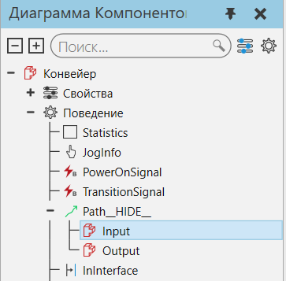
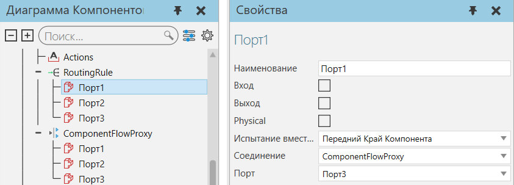
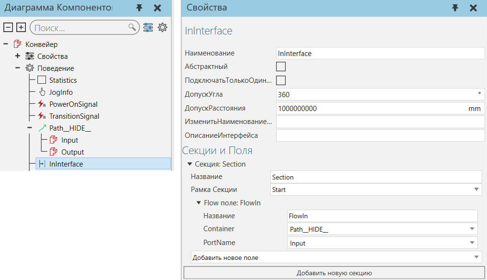
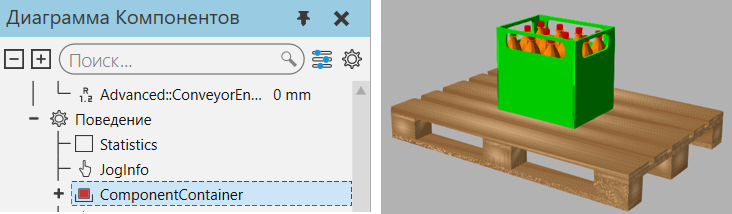

Тип поведения материальный поток используется для переноса компонентов из одного поведения в другое и/или содержания компонентов.

Типы
Название |
Описание |
|---|---|
Управляет емкостью одного или нескольких вариантов поведения, которые могут содержать компоненты. |
|
Хранит любое количество компонентов в зависимости от его емкости. |
|
Создает компоненты динамически во время моделирования. |
|
Входящие и исходящие компоненты, поступающие из одного или нескольких настраиваемых портов. |
|
Перемещает компоненты вперед по траектории. |
|
Ввод и вывод компонентов на основе иерархии правил (маршрутизации). |
|
Перемещает компоненты вперед и/или назад по траектории. |
Соединители
Поведения типа потока имеют порты, которые являются соединителями, поддерживающими передачу компонентов внутри компонента и другим компонентам.

Свойства соединителя используются для формирования логической связи между его поведением и другим поведением с соответствующим соединителем, например Вход к Выходу и Выход на Вход.
Название |
Описание |
|---|---|
Name |
Определяет имя соединителя. |
Input |
Определяет, получает ли соединитель компоненты. |
Output |
Определяет, отдаёт ли соединитель компоненты. |
Physical |
Определяет, является ли соединитель абстрактным или физическим. |
CapacityTest |
Определяет тип проверки емкости, выполняемой при переносе компонентов на другой соединитель. |
Connection |
Определяет поведение, связанное с соединителем. |
Port |
Определяет, какой соединитель с ним связан. |
Для внутренних перемещений, используйте панель Диаграммы компонентов, чтобы выбрать порт, а затем отредактируйте передачу с помощью панели Свойства.

Для внешних перемещений, используйте поведение типа интерфейса.

Скрипт потока
В некоторых случаях может потребоваться использование скриптов для определения правил маршрутизации и логики обработки динамических соединений, например конвейера с несколькими точками входа и выхода. В других случаях сценарии необходимы для извлечения и освобождения компонентов из статических контейнеров, например, для хранения и извлечения компонентов из стоек.

Скрипт для переключения компонентов на разные пути выхода
Некоторые типы поведения потока могут перемещать компоненты по путям, которые определяются с помощью элементов Frame.

Элементы рамки, используемые путями отводящего конвейера и фидера
Контейнер
Поведения других типов потока не могут физически перемещать компоненты и могут либо получать компоненты, либо обрабатывать передачу компонентов.
